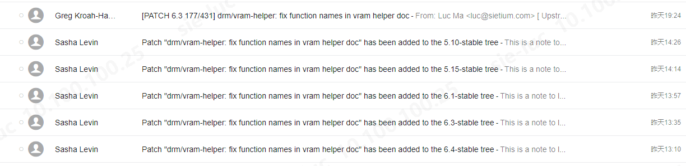

Submitting My First Linux Kernel Patch
Linux 内核的 patch 是以纯文本的邮件形式进行提交和代码走查的，而且 patch 是先到内核子系统 maintainer 维护的 git tree, 再到 Linus Torvalds 的 main tree。本文主要是以一个 patch 提交的实例来记录一下整个过程中的一些具体操作要点，至于 kernel patch 提交的规范和操作细节内核文档 和各种博客文章有很多，这里不再赘述。
用到的平台，软件，工具
- Windows Subsystem for Linux, Ubuntu 20.04 LTS (Focal Fossa)
- 邮件客户端 mutt 1.13.2 (
apt install mutt) - git 2.25.1
内核 DRM 子系统 git tree drm-misc
1
2
3
4
5
6
7
8drm git://anongit.freedesktop.org/drm/drm (fetch)
drm git://anongit.freedesktop.org/drm/drm (push)
drm-misc git://anongit.freedesktop.org/drm/drm-misc (fetch)
drm-misc git://anongit.freedesktop.org/drm/drm-misc (push)
origin git://git.kernel.org/pub/scm/linux/kernel/git/torvalds/linux.git (fetch)
origin git://git.kernel.org/pub/scm/linux/kernel/git/torvalds/linux.git (push)
stable git://git.kernel.org/pub/scm/linux/kernel/git/stable/linux.git (fetch)
stable git://git.kernel.org/pub/scm/linux/kernel/git/stable/linux.git (push)
过程
准备 patch
当你的 commit 已经在源码树上提交好后，只需使用 git format-patch 命令即可轻松生成一个内核 patch (假设 patch 里只包含一个 commit)
1 | git format-patch HEAD^ -o /tmp/ # 将生成的 patch 文件保存在 /tmp 目录 |
当你的 patch 被开发者 review 后，如果需要修改，修改后可通过增加 -v N 选项生成下一个版本的 patch
1 | git format-patch HEAD^ -v 2 -o /tmp/ |
提交 patch
使用 mutt 提交 patch
提交 Linux kernel patch 实际上就是用邮件客户端将生成好的 patch 文件发送给相关的 maintainers 和 maillists. git send-email 也可以做同样的事，这里使用的是 mutt. mutt 的基本命令行格式是
1 | mutt [-Enx] [-e cmd] [-F file] [-H file] [-i file] [-s subj] [-b addr] [-c addr] [-a file [...] --] addr|mailto_url [...] |
本例中只使用到了 -H file 选项，它将包含有邮件头和邮件主体的 patch 文件作为参数创建邮件草稿 (意思是该命令执行后还会让你再编辑邮件，包括收件人，邮件内容增删改等）。本例中 mutt 的唯一参数是后面的收件人列表，它是通过内核源码树里的一个脚本工具自动获取的。
1 | mutt -H /tmp/v2-0001-drm-vram-helper-fix-function-names-in-vram-helper.patch "`./scripts/get_maintainer.pl --separator , --norolestats /tmp/v2-0001-drm-vram-helper-fix-function-names-in-vram-helper.patch`" |
带有 Fixes: tag 的patch 应该会被 backport 到以前必要 -stable tree.

使用 git-send-email 提交 patch
git-send-email 配置 stmp.gmail 和使用都相较于 mutt 简单些。
将 user@stmp.gmail.com 的密码配置在 ~/.gitconfig 的 sendemail 段
1
2[sendemail]
smtppass = <16 characters Google App Password>1
2
3
4
5
6
7
8
9
10
11
12
13
14
15
16
17
18➜ drm git:(drm-misc-next) git send-email --to luc@sietium.com --no-cc /tmp/v5-1-1-drm-doc-Document-DRM-device-reset-expectations.patch
/tmp/v5-1-1-drm-doc-Document-DRM-device-reset-expectations.patch
OK. Log says:
Server: smtp.gmail.com
MAIL FROM:<onion0709@gmail.com>
RCPT TO:<luc@sietium.com>
From: Luc Ma <onion0709@gmail.com>
To: luc@sietium.com
Subject: [v5,1/1] drm/doc: Document DRM device reset expectations
Date: Tue, 18 Jul 2023 22:18:19 +0800
Message-Id: <20230627132323.115440-1-andrealmeid@igalia.com>
X-Mailer: git-send-email 2.25.1
Content-Type: text/plain; charset="utf-8"
MIME-Version: 1.0
X-Patchwork-Id: 544431
Content-Transfer-Encoding: 8bit
Result: 250
注意事项
- mutt 需要配置 IMAP/SMTP, 即邮件收发协议配置 (这是整个过程中最费劲的)
mutt 的配置文件默认路径是$HOME/.mutt/muttrc - git 需要配置完整的
user.name,user.email. git commit时需要加-s(--signoff) 来自动增加 Signed-off-by 标签 (如果你 Signed-off-by 标签的邮件地址和发送 patch 的邮箱地址不同的话，还需要在邮件主体的第一行手动添加From: Zhang San <xxx@yourmail.com>, xxx@yourmail.com 是你的 Signed-off-by 邮件地址)